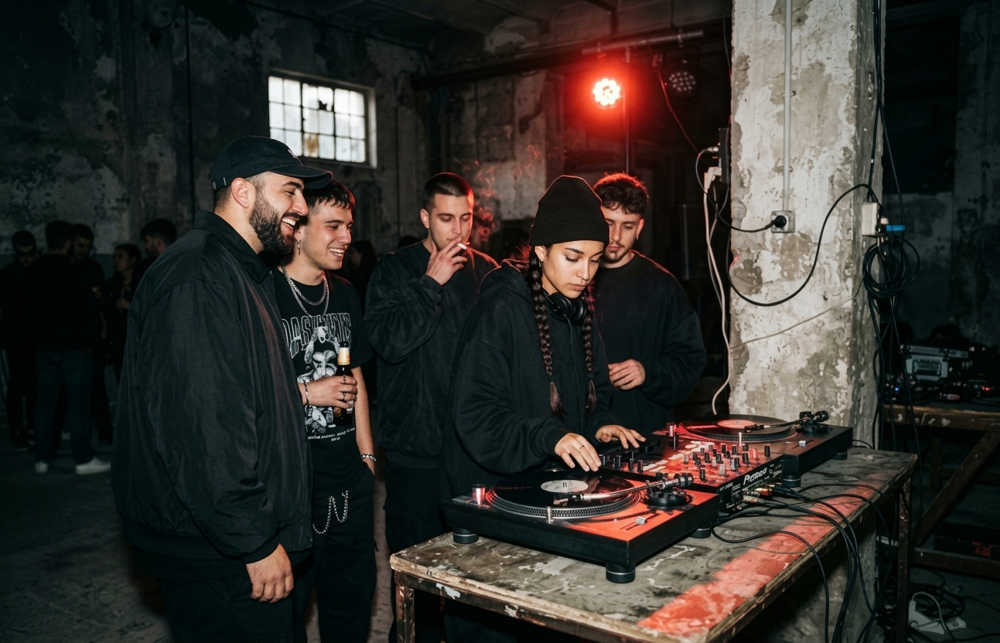
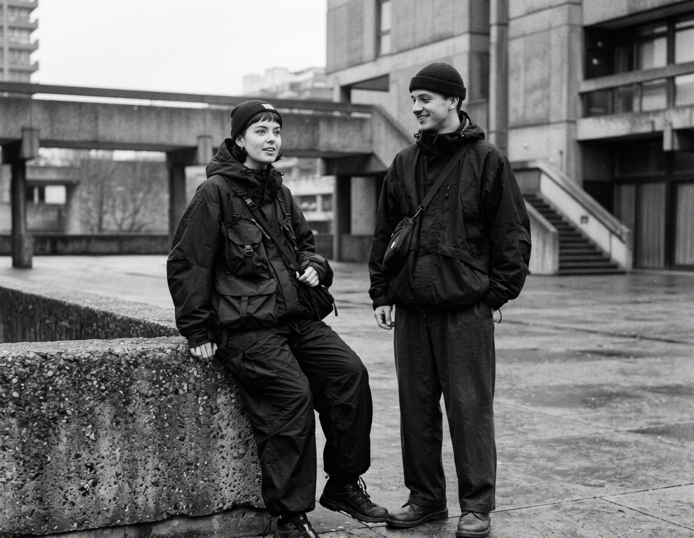
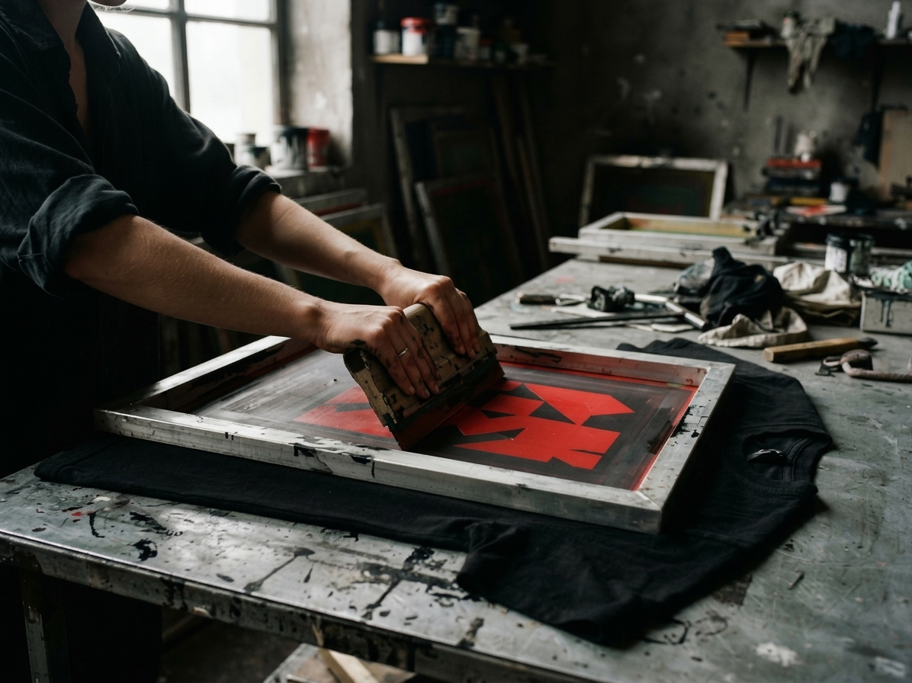
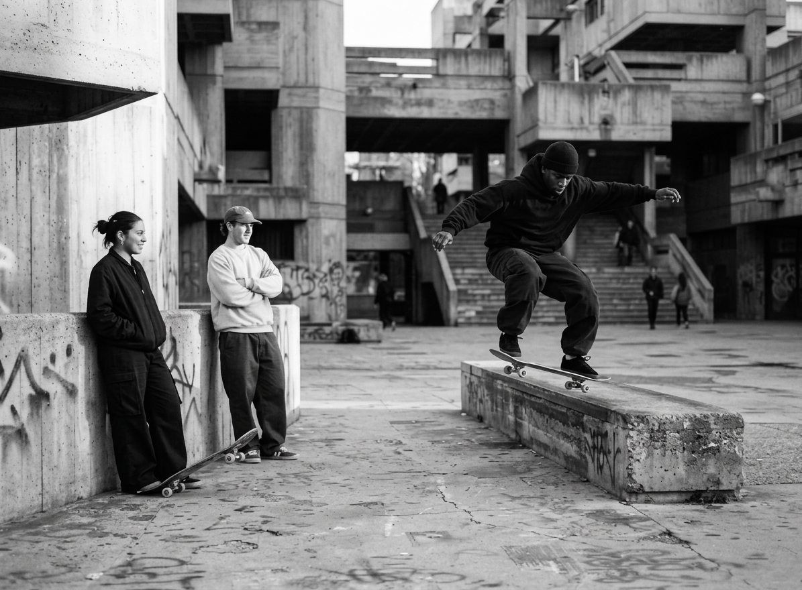
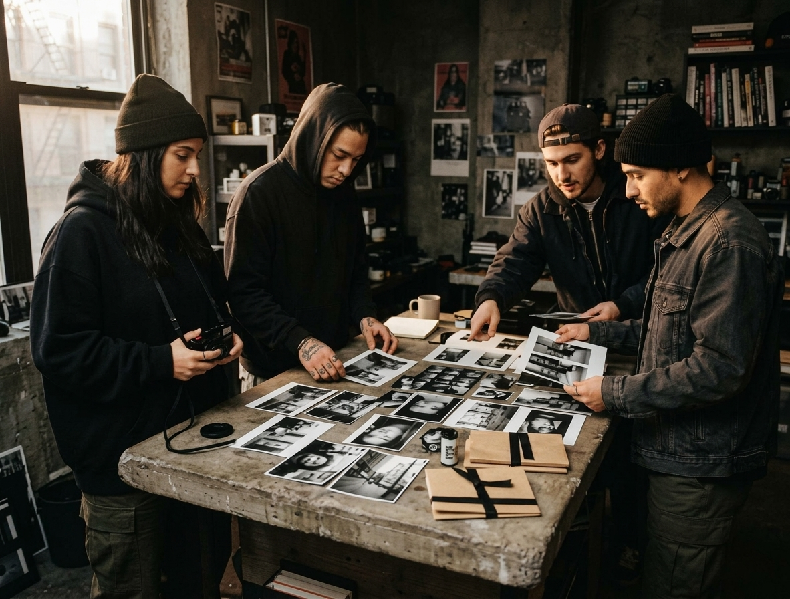

Próximo / Destacado/ 18:00 — 22:00
Fuera de frecuencia.
Nave Umbral · Madrid
404° WEAR × Frecuencia Baja. Una sesión de vinilos, looks libres y conversación para conectar a quienes crean su propio código.
Consultar el encuentro ↗FUERA DEL SISTEMA. DENTRO DE LA CALLE.
/
COLECCIÓN 001 YA DISPONIBLE
Inicio / Comunidad
Comunidad / Conectados por la calle
La ropa nos conecta. La música, el arte y el asfalto hacen el resto. Descubre la red creativa y los encuentros que imaginamos para la comunidad 404° WEAR.
Explorar la agenda ↗
01 / Red creativa
Oficios distintos, una misma actitud. Así imaginamos las colaboraciones que amplían el universo de 404° WEAR.
margen®
Diseño + serigrafía
Taller independiente de gráfica textil y pequeñas ediciones impresas.
Con 404°: laboratorio de estampación y personalización de prendas.
FB / 33
Música + cultura
Colectivo de selectores que cruza electrónica, hip-hop y sonidos de barrio.
Con 404°: curaduría musical para sesiones y encuentros.
Borde //
Skate + movimiento
Proyecto de skate que impulsa sesiones abiertas y aprendizaje compartido.
Con 404°: jornadas de patín, estilo y cultura de calle.
[Plano]
Crudo
Fotografía + edición
Estudio visual centrado en retrato urbano, autoedición y mirada colectiva.
Con 404°: paseos fotográficos y fanzines de la comunidad.
02 / Próximos encuentros
Agenda de muestra · noviembre 2026 — enero 2027. Música, talleres y nuevas formas de encontrarnos fuera de la pantalla.

Próximo / Destacado/ 18:00 — 22:00
Nave Umbral · Madrid
404° WEAR × Frecuencia Baja. Una sesión de vinilos, looks libres y conversación para conectar a quienes crean su propio código.
Consultar el encuentro ↗03 encuentros / Todos en Madrid
Taller / Margen Estudio
Trae una camiseta y experimenta con serigrafía a una tinta junto a 404° y Margen Estudio.
Taller Margen · Madrid
16:00 — 19:00
Sesión abierta / Borde Skate Co.
Una mañana de skate de iniciación, intercambio de trucos y estilismos en movimiento con 404°.
Patio Borde · Madrid
11:00 — 14:00
Paseo fotográfico / Plano Crudo
Recorrido urbano con 404° y Plano Crudo para crear un pequeño fanzine colectivo. Trae cámara o móvil.
Estudio Plano Crudo · Madrid
10:00 — 13:00
03 / Retrospectiva conceptual
Encuentros anteriores de muestra. Un archivo imaginado de lo que pasa cuando la comunidad toma la iniciativa.

404° y Margen Estudio: una tarde imaginada de pruebas de tinta, camisetas intervenidas y gráfica compartida.

Una sesión conceptual de 404° con Borde Skate Co.: primeras tablas, trucos y nuevas maneras de ocupar el patio.

Un paseo fotográfico imaginado con 404° y Plano Crudo que termina en una mesa de contactos y pequeños fanzines.
Fotografías conceptuales, no documentan eventos reales.
04 / La próxima conexión empieza contigo
¿Creas, patinas, pinchas o tienes algo que proponer? Cuéntanos cómo te gustaría formar parte del universo 404°.
Proponer una colaboración ↗